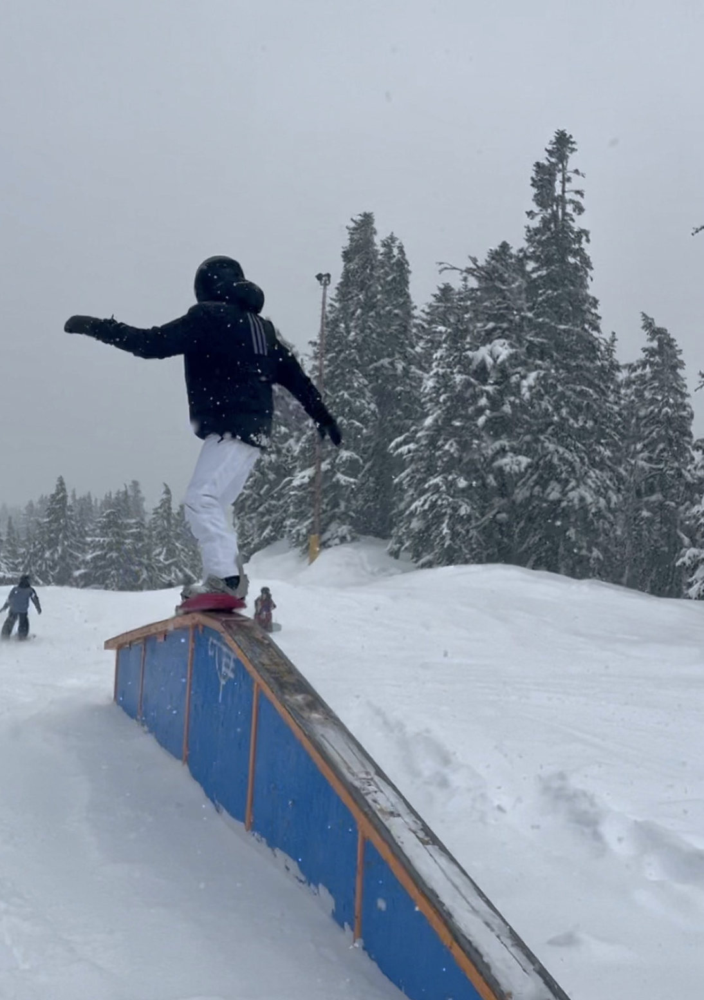

Mt. Hood, Oregon’s tallest peak, is home to some of the Pacific Northwest’s most renowned ski destinations. With a combination of historic charm, modern amenities, and diverse terrain, the mountain’s three primary resorts—Timberline Lodge, Mt. Hood Meadows, and Skibowl—offer unique experiences tailored to a wide range of skiers and snowboarders.
This guide provides an in-depth comparison of these resorts, highlighting their distinctive features, terrain offerings, and overall value. Whether you seek the year-round accessibility of Timberline, the expansive runs of Meadows, or the thrilling night skiing at Skibowl, this resource will help you make an informed decision for your next visit to Mt. Hood.
Hi, my name is Maha! I'm a Portland native and have been skiing for six years, competing competitively for four, primarily at Mount Hood Meadows. I’ve consistently visited all three resorts on Mount Hood and love exploring everything they have to offer. My favorite parts of the mountain are hitting the park, riding through the trees, and carving down a good downhill run. Through this blog, I share my experiences and reviews to help fellow riders make the most of their time on the mountain.
